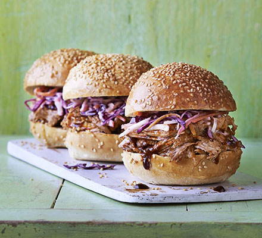

Takes Me Back to Texas Slow-Cooked Pulled Pork

Ingredients
- 1.5 kg pork shoulder
- 1 large onion, diced
- 2 garlic cloves
- Mixed herbs
- 1 tablespoon of brown sugar
- 1 tablespoon of sweet paprika
- Salt and pepper to season
- 1 bottle of your favourite BBQ sauce (see Tips section for more information)
- A dash of chipotle sauce
- 1/2 cup apple cider vinegar
- 1/2 - 1 cup of chicken stock
Method
- Place pork in the slow cooker.
- Put other ingredients in the slow cooker – make sure the pork is well covered with the sauce and stock.
- Cover and cook on high for 6 hours.
- Check occasionally and add more liquid if needed.
- Remove pork from slow cooker and pull apart with two forks.
- Place the pulled apart pork back in the sauce mixture for an hour or two to continue soaking up the BBQ flavours.
Tips
I’ve used the following BBQ sauces in the past and find they work well:
- McCormick Grill Mates Brown Sugar Bourbon BBQ Sauce
- McCormick Grill Mates Vintage Smokehouse BBQ Sauce
- Heston for Coles Sweet, Sticky BBQ Sauce
I haven’t tried these (US) sauces with the pork but they have been recommended to me:
- Bull's Eye Memphis-Style BBQ Sauce
- Sweet Baby Ray's Original BBQ